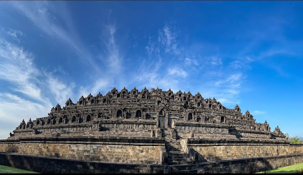

Candi BorobudurCandi Borobudur adalah sebuah candi budha yang terletak di Magelang, Jawa Tengah, Indonesia. Candi ini merupakan salah satu situs warisan dunia UNESCO dan menarik banyak wisatawan mancanegara. |

Gunung BromoWisata Gunung Bromo adalah salah satu destinasi wisata alam yang menarik di Indonesia. Gunung Bromo merupakan salah satu gunung berapi yang aktif di Provinsi Jawa Timur. |

Candi PrambananCandi Prambanan adalah sebuah candi Hindu yang terletak di tepi jalan raya 17 Km dari Yogyakarta ke Solo, Jawa Tengah, Indonesia. Candi ini merupakan salah satu daya tarik wisata terkenal di Indonesia yang banyak dikunjungi wisatawan dalam negeri maupun mancanegara. |